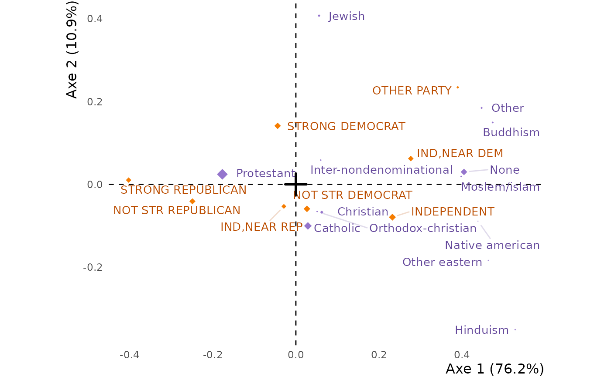
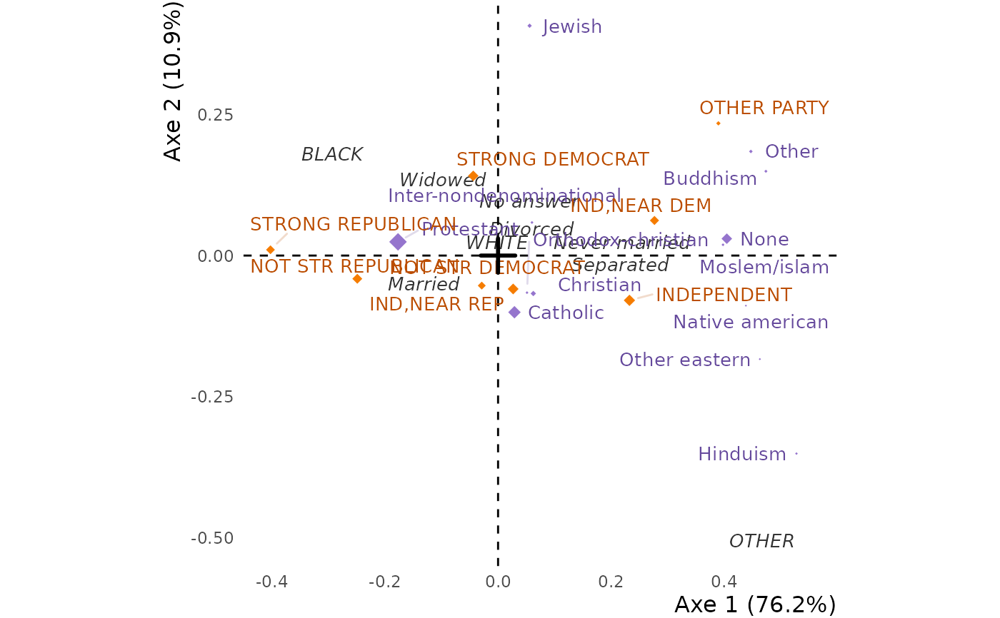

Makes the correspondence analysis of a crosstab with
FactoMineR::CA: first make the table with tabxplor::tab(),
then analyse it. The analysis reads the (weighted) counts of the table, whatever it displays,
without its Total rows and columns. To leave out some rows or columns, filter the table before,
with dplyr::filter() and dplyr::select().
Supplementary variables are given in the table itself: in a `tab()` of several row variables, or several column variables, the first row variable and the first column variable make the active table, and the other variables are supplementary, placed on the axes without taking part in them. `tab(data, c(relig, marital), c(partyid, race))` analyses `relig` by `partyid`, and places the levels of `marital` by their profile over `partyid`, and the levels of `race` by their profile over `relig`.
Arguments
- table
A crosstab made with
tabxplor::tab(), with one or several row variables and one or several column variables. A matrix or atableof counts works too, with its supplementary rows and columns given as inFactoMineR::CA()(`row.sup`, `col.sup`).- ncp
The number of axes to keep. All of them by default.
- ...
Additional arguments to pass to
CA.
Value
A `CA` object from FactoMineR, which remembers the names of the two active
variables, so that interpret can print them, and, in `source`, the variable and the
name of every row and column of the table.
Examples
gss <- forcats::gss_cat |>
dplyr::filter(!relig %in% c("No answer", "Don't know", "Not applicable"),
!partyid %in% c("No answer", "Don't know"))
crosstab <- tabxplor::tab(gss, relig, partyid)
res.ca <- correspondence_analysis(crosstab)
interpret(res.ca) # the eigenvalues, then the axes
#> <div class="tx-scrollbox"><table class="tabxplor-tab" data-quarto-disable-processing="true"><thead><tr><th class="tx-l tx-br tx-bl" rowspan="2"></th><th class="tx-l tx-br tx-bl tx-rv" rowspan="2">Variable</th><th class="tx-l tx-br tx-bl" rowspan="2">Positive_levels</th><th class="tx-r tx-num tx-br"> </th><th class="tx-l tx-br tx-bl" rowspan="2">Negative_levels</th><th class="tx-r tx-num tx-br"> </th></tr><tr><th class="tx-r tx-num tx-br tx-unit"><col%></th><th class="tx-r tx-num tx-br tx-unit"><col%></th></tr></thead><tbody><tr><td class="tx-l tx-br tx-bl tx-lbl tx-vname tx-b tx-nb" rowspan="5">Axe 1: 76.2%<br>of variance</td><td class="tx-l tx-br tx-bl tx-rv">relig</td><td class="tx-l tx-br tx-bl">None</td><td class="tx-r tx-num tx-br p3 tx-b">55.0%</td><td class="tx-l tx-br tx-bl">Protestant</td><td class="tx-r tx-num tx-br m2 tx-b">32.4%</td></tr>
#> <tr class="tx-b tx-bt tx-bb"><td class="tx-l tx-br tx-bl tx-rv">relig: above mean ctr</td><td class="tx-l tx-br tx-bl"></td><td class="tx-r tx-num tx-br tx-b">55.0%</td><td class="tx-l tx-br tx-bl"></td><td class="tx-r tx-num tx-br tx-b">32.4%</td></tr>
#> <tr><td class="tx-l tx-br tx-bl tx-rv">partyid</td><td class="tx-l tx-br tx-bl">Independent</td><td class="tx-r tx-num tx-br p1 tx-b">21.1%</td><td class="tx-l tx-br tx-bl">Strong republican</td><td class="tx-r tx-num tx-br m2 tx-b">35.9%</td></tr>
#> <tr><td class="tx-l tx-br tx-bl tx-rv"></td><td class="tx-l tx-br tx-bl">Ind,near dem</td><td class="tx-r tx-num tx-br p1 tx-b">18.3%</td><td class="tx-l tx-br tx-bl">Not str republican</td><td class="tx-r tx-num tx-br m1 tx-b">18.0%</td></tr>
#> <tr class="tx-b tx-bt tx-bb tx-bb2"><td class="tx-l tx-br tx-bl tx-rv">partyid: above mean ctr</td><td class="tx-l tx-br tx-bl"></td><td class="tx-r tx-num tx-br tx-b">39.4%</td><td class="tx-l tx-br tx-bl"></td><td class="tx-r tx-num tx-br tx-b">53.9%</td></tr>
#> <tr><td class="tx-l tx-br tx-bl tx-lbl tx-vname tx-b tx-bb2" rowspan="5">Axe 2: 10.9%<br>of variance</td><td class="tx-l tx-br tx-bl tx-rv">relig</td><td class="tx-l tx-br tx-bl">Jewish</td><td class="tx-r tx-num tx-br p3 tx-b">43.0%</td><td class="tx-l tx-br tx-bl">Catholic</td><td class="tx-r tx-num tx-br m2 tx-b">34.3%</td></tr>
#> <tr class="tx-b tx-bt tx-bb"><td class="tx-l tx-br tx-bl tx-rv">relig: above mean ctr</td><td class="tx-l tx-br tx-bl"></td><td class="tx-r tx-num tx-br tx-b">43.0%</td><td class="tx-l tx-br tx-bl"></td><td class="tx-r tx-num tx-br tx-b">34.3%</td></tr>
#> <tr><td class="tx-l tx-br tx-bl tx-rv">partyid</td><td class="tx-l tx-br tx-bl">Strong democrat</td><td class="tx-r tx-num tx-br p2 tx-b">46.4%</td><td class="tx-l tx-br tx-bl">Independent</td><td class="tx-r tx-num tx-br m1 tx-b">17.2%</td></tr>
#> <tr><td class="tx-l tx-br tx-bl tx-rv"></td><td class="tx-l tx-br tx-bl">Other party</td><td class="tx-r tx-num tx-br p1 tx-b">14.3%</td><td class="tx-l tx-br tx-bl"></td><td class="tx-r tx-num tx-br g1"></td></tr>
#> <tr class="tx-b tx-bt tx-bb tx-bb2"><td class="tx-l tx-br tx-bl tx-rv">partyid: above mean ctr</td><td class="tx-l tx-br tx-bl"></td><td class="tx-r tx-num tx-br tx-b">60.8%</td><td class="tx-l tx-br tx-bl"></td><td class="tx-r tx-num tx-br tx-b">17.2%</td></tr></tbody><tfoot><tr><td colspan="6"><div class="tx-foot">Contribution to the variance of the axis: a level on the positive side, contributing <span class="p1" style="font-weight:bold;">×1</span>; <span class="p2" style="font-weight:bold;">×2</span>; <span class="p3" style="font-weight:bold;">×5</span>; <span class="p4" style="font-weight:bold;">×10</span> the mean contribution; a level on the negative side, contributing <span class="m1" style="font-weight:bold;">×1</span>; <span class="m2" style="font-weight:bold;">×2</span>; <span class="m3" style="font-weight:bold;">×5</span>; <span class="m4" style="font-weight:bold;">×10</span> the mean contribution.</div></td></tr></tfoot></table></div>
#> <div class="tx-scrollbox"><table class="tabxplor-tab" data-quarto-disable-processing="true"><thead><tr><th class="tx-l tx-br tx-bl tx-rv" rowspan="2">Axe</th><th class="tx-r tx-num">eigenvalue</th><th class="tx-r tx-num">% variance</th><th class="tx-r tx-num tx-br">cumul.</th></tr><tr><th class="tx-r tx-num tx-unit"><var></th><th class="tx-r tx-num tx-unit"><col%></th><th class="tx-r tx-num tx-br tx-unit"></th></tr></thead><tbody><tr><td class="tx-l tx-br tx-bl tx-rv">Axe 1</td><td class="tx-r tx-num g2">0.049</td><td class="tx-r tx-num g2 tx-bar tx-bar-on" style="--tx-bar:100%">76.2%</td><td class="tx-r tx-num tx-br g2">76.2%</td></tr>
#> <tr><td class="tx-l tx-br tx-bl tx-rv">Axe 2</td><td class="tx-r tx-num g2">0.007</td><td class="tx-r tx-num g2 tx-bar tx-bar-on" style="--tx-bar:14.3%">10.9%</td><td class="tx-r tx-num tx-br g2">87.1%</td></tr>
#> <tr><td class="tx-l tx-br tx-bl tx-rv">Axe 3</td><td class="tx-r tx-num g2">0.005</td><td class="tx-r tx-num g2 tx-bar tx-bar-on" style="--tx-bar:9.9%">7.5%</td><td class="tx-r tx-num tx-br g2">94.6%</td></tr>
#> <tr><td class="tx-l tx-br tx-bl tx-rv">Axe 4</td><td class="tx-r tx-num g2">0.002</td><td class="tx-r tx-num g2 tx-bar tx-bar-on" style="--tx-bar:3.6%">2.7%</td><td class="tx-r tx-num tx-br g2">97.3%</td></tr>
#> <tr><td class="tx-l tx-br tx-bl tx-rv">Axe 5</td><td class="tx-r tx-num g2">0.001</td><td class="tx-r tx-num g2 tx-bar tx-bar-on" style="--tx-bar:2.7%">2.0%</td><td class="tx-r tx-num tx-br g2">99.4%</td></tr>
#> <tr><td class="tx-l tx-br tx-bl tx-rv">Axe 6</td><td class="tx-r tx-num g2">0</td><td class="tx-r tx-num g2 tx-bar tx-bar-on" style="--tx-bar:0.7%">0.5%</td><td class="tx-r tx-num tx-br g2">99.9%</td></tr>
#> <tr><td class="tx-l tx-br tx-bl tx-rv">Axe 7</td><td class="tx-r tx-num g2">0</td><td class="tx-r tx-num g2 tx-bar tx-bar-on" style="--tx-bar:0.1%">0.1%</td><td class="tx-r tx-num tx-br g2">100%</td></tr>
#> <tr class="tx-b tx-bt tx-bb tx-bb2"><td class="tx-l tx-br tx-bl tx-rv">Total</td><td class="tx-r tx-num g2">0.064</td><td class="tx-r tx-num tx-b">100%</td><td class="tx-r tx-num tx-br tx-b"></td></tr></tbody></table></div>
# \donttest{
ggfacto(res.ca) # the graph

ggfacto(res.ca, interactive = TRUE) # hover: the profile of each level
# }
# the size of the deviations, which the graph does not show
tabxplor::tab(gss, relig, partyid, pct = "row", color = "contrib")
#> <div class="tx-scrollbox"><table class="tabxplor-tab" data-quarto-disable-processing="true"><thead><tr><th class="tx-span" colspan="1"></th><th class="tx-span" colspan="8">partyid</th><th class="tx-span" colspan="1"></th></tr><tr><th class="tx-l tx-br tx-bl tx-rv" rowspan="2">relig</th><th class="tx-r tx-num">Other party</th><th class="tx-r tx-num">Strong<br>republican</th><th class="tx-r tx-num">Not str<br>republican</th><th class="tx-r tx-num">Ind,near rep</th><th class="tx-r tx-num">Independent</th><th class="tx-r tx-num">Ind,near dem</th><th class="tx-r tx-num">Not str<br>democrat</th><th class="tx-r tx-num">Strong democrat</th><th class="tx-r tx-num tx-br tx-bl tx-tot">Total</th></tr><tr><th class="tx-r tx-num tx-unit"><row%></th><th class="tx-r tx-num tx-unit"></th><th class="tx-r tx-num tx-unit"></th><th class="tx-r tx-num tx-unit"></th><th class="tx-r tx-num tx-unit"></th><th class="tx-r tx-num tx-unit"></th><th class="tx-r tx-num tx-unit"></th><th class="tx-r tx-num tx-unit"></th><th class="tx-r tx-num tx-br tx-bl tx-tot tx-unit"><row% (n)></th></tr></thead><tbody><tr><td class="tx-l tx-br tx-bl tx-rv">Inter-nondenominational</td><td class="tx-r tx-num g1" data-toggle="tooltip" data-container="body" data-placement="auto right" title="diff: -1% ; ratio: ÷1.99 ; OR: 1.00 ; ctr: 0% ; resid: -0.7 ; n: 1">1%</td><td class="tx-r tx-num g1" data-toggle="tooltip" data-container="body" data-placement="auto right" title="diff: +2% ; ratio: ×1.19 ; OR: 2.37 ; ctr: 0% ; resid: +0.7 ; n: 14">13%</td><td class="tx-r tx-num g1" data-toggle="tooltip" data-container="body" data-placement="auto right" title="diff: -5% ; ratio: ÷1.54 ; OR: 1.29 ; ctr: 0% ; resid: -1.5 ; n: 10">9%</td><td class="tx-r tx-num g1" data-toggle="tooltip" data-container="body" data-placement="auto right" title="diff: +0% ; ratio: ÷1.01 ; OR: 1.97 ; ctr: 0% ; resid: +0 ; n: 9">8%</td><td class="tx-r tx-num g1" data-toggle="tooltip" data-container="body" data-placement="auto right" title="diff: +7% ; ratio: ×1.35 ; OR: 2.68 ; ctr: 0% ; resid: +1.8 ; n: 28">26%</td><td class="tx-r tx-num g1" data-toggle="tooltip" data-container="body" data-placement="auto right" title="diff: +0% ; ratio: ×1.03 ; OR: 2.04 ; ctr: 0% ; resid: +0.1 ; n: 13">12%</td><td class="tx-r tx-num g1" data-toggle="tooltip" data-container="body" data-placement="auto right" title="diff: -7% ; ratio: ÷1.70 ; OR: 1.17 ; ctr: 0% ; resid: -2.0 ; n: 11">10%</td><td class="tx-r tx-num g1" data-toggle="tooltip" data-container="body" data-placement="auto right" title="diff: +4% ; ratio: ×1.24 ; OR: 2.47 ; ctr: 0% ; resid: +1.1 ; n: 22">20%</td><td class="tx-r tx-num tx-br tx-bl tx-tot tx-b">100%<span class="tx-sec" style="font-weight:normal;"> ( 108)</span></td></tr>
#> <tr><td class="tx-l tx-br tx-bl tx-rv">Native american</td><td class="tx-r tx-num g1" data-toggle="tooltip" data-container="body" data-placement="auto right" title="diff: -2% ; ratio: ×0 ; ctr: 0% ; n: 0">0%</td><td class="tx-r tx-num g1" data-toggle="tooltip" data-container="body" data-placement="auto right" title="diff: -11% ; ratio: ×0 ; ctr: 0% ; resid: -1.7 ; n: 0">0%</td><td class="tx-r tx-num g1" data-toggle="tooltip" data-container="body" data-placement="auto right" title="diff: -10% ; ratio: ÷3.28 ; OR: Inf ; ctr: 0% ; resid: -1.4 ; n: 1">4%</td><td class="tx-r tx-num g1" data-toggle="tooltip" data-container="body" data-placement="auto right" title="diff: -4% ; ratio: ÷1.93 ; OR: Inf ; ctr: 0% ; resid: -0.7 ; n: 1">4%</td><td class="tx-r tx-num g1" data-toggle="tooltip" data-container="body" data-placement="auto right" title="diff: +7% ; ratio: ×1.36 ; OR: Inf ; ctr: 0% ; resid: +0.8 ; n: 6">26%</td><td class="tx-r tx-num g1" data-toggle="tooltip" data-container="body" data-placement="auto right" title="diff: +6% ; ratio: ×1.48 ; OR: Inf ; ctr: 0% ; resid: +0.8 ; n: 4">17%</td><td class="tx-r tx-num g1" data-toggle="tooltip" data-container="body" data-placement="auto right" title="diff: +13% ; ratio: ×1.76 ; OR: Inf ; ctr: 0% ; resid: +1.7 ; n: 7">30%</td><td class="tx-r tx-num g1" data-toggle="tooltip" data-container="body" data-placement="auto right" title="diff: +1% ; ratio: ×1.06 ; OR: Inf ; ctr: 0% ; resid: +0.1 ; n: 4">17%</td><td class="tx-r tx-num tx-br tx-bl tx-tot tx-b">100%<span class="tx-sec" style="font-weight:normal;"> ( 23)</span></td></tr>
#> <tr><td class="tx-l tx-br tx-bl tx-rv">Christian</td><td class="tx-r tx-num g1" data-toggle="tooltip" data-container="body" data-placement="auto right" title="diff: +1% ; ratio: ×1.75 ; OR: 1.00 ; ctr: 1% ; resid: +2.7 ; n: 22">3%</td><td class="tx-r tx-num g1" data-toggle="tooltip" data-container="body" data-placement="auto right" title="diff: -3% ; ratio: ÷1.38 ; OR: 1/2.41 ; ctr: 0% ; resid: -2.5 ; n: 54">8%</td><td class="tx-r tx-num g1" data-toggle="tooltip" data-container="body" data-placement="auto right" title="diff: +1% ; ratio: ×1.09 ; OR: 1/1.61 ; ctr: 0% ; resid: +0.9 ; n: 106">15%</td><td class="tx-r tx-num g1" data-toggle="tooltip" data-container="body" data-placement="auto right" title="diff: +2% ; ratio: ×1.23 ; OR: 1/1.42 ; ctr: 0% ; resid: +1.9 ; n: 71">10%</td><td class="tx-r tx-num g1" data-toggle="tooltip" data-container="body" data-placement="auto right" title="diff: +3% ; ratio: ×1.13 ; OR: 1/1.54 ; ctr: 0% ; resid: +1.7 ; n: 149">22%</td><td class="tx-r tx-num g1" data-toggle="tooltip" data-container="body" data-placement="auto right" title="diff: -3% ; ratio: ÷1.27 ; OR: 1/2.22 ; ctr: 0% ; resid: -2.1 ; n: 63">9%</td><td class="tx-r tx-num g1" data-toggle="tooltip" data-container="body" data-placement="auto right" title="diff: +1% ; ratio: ×1.03 ; OR: 1/1.70 ; ctr: 0% ; resid: +0.4 ; n: 122">18%</td><td class="tx-r tx-num g1" data-toggle="tooltip" data-container="body" data-placement="auto right" title="diff: -2% ; ratio: ÷1.15 ; OR: 1/2.02 ; ctr: 0% ; resid: -1.6 ; n: 97">14%</td><td class="tx-r tx-num tx-br tx-bl tx-tot tx-b">100%<span class="tx-sec" style="font-weight:normal;"> ( 684)</span></td></tr>
#> <tr><td class="tx-l tx-br tx-bl tx-rv">Orthodox-christian</td><td class="tx-r tx-num g1" data-toggle="tooltip" data-container="body" data-placement="auto right" title="diff: -2% ; ratio: ×0 ; ctr: 0% ; resid: -1.3 ; n: 0">0%</td><td class="tx-r tx-num g1" data-toggle="tooltip" data-container="body" data-placement="auto right" title="diff: -1% ; ratio: ÷1.14 ; OR: Inf ; ctr: 0% ; resid: -0.4 ; n: 9">10%</td><td class="tx-r tx-num g1" data-toggle="tooltip" data-container="body" data-placement="auto right" title="diff: -3% ; ratio: ÷1.22 ; OR: Inf ; ctr: 0% ; resid: -0.7 ; n: 11">12%</td><td class="tx-r tx-num g1" data-toggle="tooltip" data-container="body" data-placement="auto right" title="diff: +2% ; ratio: ×1.27 ; OR: Inf ; ctr: 0% ; resid: +0.8 ; n: 10">11%</td><td class="tx-r tx-num g1" data-toggle="tooltip" data-container="body" data-placement="auto right" title="diff: -1% ; ratio: ÷1.06 ; OR: Inf ; ctr: 0% ; resid: -0.3 ; n: 17">18%</td><td class="tx-r tx-num g1" data-toggle="tooltip" data-container="body" data-placement="auto right" title="diff: +3% ; ratio: ×1.27 ; OR: Inf ; ctr: 0% ; resid: +1.0 ; n: 14">15%</td><td class="tx-r tx-num g1" data-toggle="tooltip" data-container="body" data-placement="auto right" title="diff: +3% ; ratio: ×1.17 ; OR: Inf ; ctr: 0% ; resid: +0.7 ; n: 19">20%</td><td class="tx-r tx-num g1" data-toggle="tooltip" data-container="body" data-placement="auto right" title="diff: -1% ; ratio: ÷1.10 ; OR: Inf ; ctr: 0% ; resid: -0.4 ; n: 14">15%</td><td class="tx-r tx-num tx-br tx-bl tx-tot tx-b">100%<span class="tx-sec" style="font-weight:normal;"> ( 94)</span></td></tr>
#> <tr><td class="tx-l tx-br tx-bl tx-rv">Moslem/islam</td><td class="tx-r tx-num g1" data-toggle="tooltip" data-container="body" data-placement="auto right" title="diff: -1% ; ratio: ÷1.82 ; OR: 1.00 ; ctr: 0% ; resid: -0.6 ; n: 1">1%</td><td class="tx-r tx-num g1" data-toggle="tooltip" data-container="body" data-placement="auto right" title="diff: -9% ; ratio: ÷5.38 ; OR: 1/2.96 ; ctr: 1% ; resid: -2.8 ; n: 2">2%</td><td class="tx-r tx-num g1" data-toggle="tooltip" data-container="body" data-placement="auto right" title="diff: -11% ; ratio: ÷4.70 ; OR: 1/2.58 ; ctr: 1% ; resid: -3.2 ; n: 3">3%</td><td class="tx-r tx-num g1" data-toggle="tooltip" data-container="body" data-placement="auto right" title="diff: -1% ; ratio: ÷1.19 ; OR: 1.53 ; ctr: 0% ; resid: -0.5 ; n: 7">7%</td><td class="tx-r tx-num g1" data-toggle="tooltip" data-container="body" data-placement="auto right" title="diff: +2% ; ratio: ×1.10 ; OR: 2.01 ; ctr: 0% ; resid: +0.5 ; n: 21">21%</td><td class="tx-r tx-num g1" data-toggle="tooltip" data-container="body" data-placement="auto right" title="diff: +7% ; ratio: ×1.64 ; OR: 2.98 ; ctr: 0% ; resid: +2.3 ; n: 19">19%</td><td class="tx-r tx-num g1" data-toggle="tooltip" data-container="body" data-placement="auto right" title="diff: +11% ; ratio: ×1.63 ; OR: 2.98 ; ctr: 1% ; resid: +2.9 ; n: 28">28%</td><td class="tx-r tx-num g1" data-toggle="tooltip" data-container="body" data-placement="auto right" title="diff: +2% ; ratio: ×1.11 ; OR: 2.02 ; ctr: 0% ; resid: +0.5 ; n: 18">18%</td><td class="tx-r tx-num tx-br tx-bl tx-tot tx-b">100%<span class="tx-sec" style="font-weight:normal;"> ( 99)</span></td></tr>
#> <tr><td class="tx-l tx-br tx-bl tx-rv">Other eastern</td><td class="tx-r tx-num g1" data-toggle="tooltip" data-container="body" data-placement="auto right" title="diff: -2% ; ratio: ×0 ; ctr: 0% ; n: 0">0%</td><td class="tx-r tx-num g1" data-toggle="tooltip" data-container="body" data-placement="auto right" title="diff: -5% ; ratio: ÷1.74 ; OR: Inf ; ctr: 0% ; resid: -0.8 ; n: 2">6%</td><td class="tx-r tx-num g1" data-toggle="tooltip" data-container="body" data-placement="auto right" title="diff: -8% ; ratio: ÷2.28 ; OR: Inf ; ctr: 0% ; resid: -1.3 ; n: 2">6%</td><td class="tx-r tx-num g1" data-toggle="tooltip" data-container="body" data-placement="auto right" title="diff: +1% ; ratio: ×1.12 ; OR: Inf ; ctr: 0% ; resid: +0.2 ; n: 3">9%</td><td class="tx-r tx-num g1" data-toggle="tooltip" data-container="body" data-placement="auto right" title="diff: +18% ; ratio: ×1.95 ; OR: Inf ; ctr: 0% ; resid: +2.6 ; n: 12">38%</td><td class="tx-r tx-num g1" data-toggle="tooltip" data-container="body" data-placement="auto right" title="diff: +10% ; ratio: ×1.87 ; OR: Inf ; ctr: 0% ; resid: +1.8 ; n: 7">22%</td><td class="tx-r tx-num g1" data-toggle="tooltip" data-container="body" data-placement="auto right" title="diff: -8% ; ratio: ÷1.85 ; OR: Inf ; ctr: 0% ; resid: -1.2 ; n: 3">9%</td><td class="tx-r tx-num g1" data-toggle="tooltip" data-container="body" data-placement="auto right" title="diff: -7% ; ratio: ÷1.75 ; OR: Inf ; ctr: 0% ; resid: -1.1 ; n: 3">9%</td><td class="tx-r tx-num tx-br tx-bl tx-tot tx-b">100%<span class="tx-sec" style="font-weight:normal;"> ( 32)</span></td></tr>
#> <tr><td class="tx-l tx-br tx-bl tx-rv">Hinduism</td><td class="tx-r tx-num g1" data-toggle="tooltip" data-container="body" data-placement="auto right" title="diff: -2% ; ratio: ×0 ; ctr: 0% ; resid: -1.1 ; n: 0">0%</td><td class="tx-r tx-num g1" data-toggle="tooltip" data-container="body" data-placement="auto right" title="diff: -11% ; ratio: ×0 ; ctr: 1% ; resid: -2.9 ; n: 0">0%</td><td class="tx-r tx-num g1" data-toggle="tooltip" data-container="body" data-placement="auto right" title="diff: -6% ; ratio: ÷1.64 ; OR: Inf ; ctr: 0% ; resid: -1.3 ; n: 6">9%</td><td class="tx-r tx-num g1" data-toggle="tooltip" data-container="body" data-placement="auto right" title="diff: -6% ; ratio: ÷2.90 ; OR: Inf ; ctr: 0% ; resid: -1.7 ; n: 2">3%</td><td class="tx-r tx-num g1" data-toggle="tooltip" data-container="body" data-placement="auto right" title="diff: +18% ; ratio: ×1.96 ; OR: Inf ; ctr: 1% ; resid: +3.9 ; n: 26">38%</td><td class="tx-r tx-num g1" data-toggle="tooltip" data-container="body" data-placement="auto right" title="diff: +6% ; ratio: ×1.48 ; OR: Inf ; ctr: 0% ; resid: +1.5 ; n: 12">17%</td><td class="tx-r tx-num g1" data-toggle="tooltip" data-container="body" data-placement="auto right" title="diff: +9% ; ratio: ×1.51 ; OR: Inf ; ctr: 0% ; resid: +1.9 ; n: 18">26%</td><td class="tx-r tx-num g1" data-toggle="tooltip" data-container="body" data-placement="auto right" title="diff: -9% ; ratio: ÷2.26 ; OR: Inf ; ctr: 0% ; resid: -2.1 ; n: 5">7%</td><td class="tx-r tx-num tx-br tx-bl tx-tot tx-b">100%<span class="tx-sec" style="font-weight:normal;"> ( 69)</span></td></tr>
#> <tr><td class="tx-l tx-br tx-bl tx-rv">Buddhism</td><td class="tx-r tx-num g1" data-toggle="tooltip" data-container="body" data-placement="auto right" title="diff: +2% ; ratio: ×2.28 ; OR: 1.00 ; ctr: 0% ; resid: +2.1 ; n: 6">4%</td><td class="tx-r tx-num g1" data-toggle="tooltip" data-container="body" data-placement="auto right" title="diff: -5% ; ratio: ÷1.73 ; OR: 1/3.94 ; ctr: 0% ; resid: -1.8 ; n: 9">6%</td><td class="tx-r tx-num g1" data-toggle="tooltip" data-container="body" data-placement="auto right" title="diff: -11% ; ratio: ÷4.08 ; OR: 1/9.30 ; ctr: 1% ; resid: -3.7 ; n: 5">3%</td><td class="tx-r tx-num g1" data-toggle="tooltip" data-container="body" data-placement="auto right" title="diff: -4% ; ratio: ÷1.72 ; OR: 1/3.92 ; ctr: 0% ; resid: -1.5 ; n: 7">5%</td><td class="tx-r tx-num g1" data-toggle="tooltip" data-container="body" data-placement="auto right" title="diff: +2% ; ratio: ×1.09 ; OR: 1/2.09 ; ctr: 0% ; resid: +0.5 ; n: 30">21%</td><td class="tx-r tx-num p2 tx-b" data-toggle="tooltip" data-container="body" data-placement="auto right" title="diff: +16% ; ratio: ×2.33 ; OR: 1.02 ; ctr: 2% ; resid: +5.8 ; n: 39">27%</td><td class="tx-r tx-num g1" data-toggle="tooltip" data-container="body" data-placement="auto right" title="diff: +3% ; ratio: ×1.17 ; OR: 1/1.95 ; ctr: 0% ; resid: +0.9 ; n: 29">20%</td><td class="tx-r tx-num g1" data-toggle="tooltip" data-container="body" data-placement="auto right" title="diff: -4% ; ratio: ÷1.30 ; OR: 1/2.97 ; ctr: 0% ; resid: -1.2 ; n: 18">13%</td><td class="tx-r tx-num tx-br tx-bl tx-tot tx-b">100%<span class="tx-sec" style="font-weight:normal;"> ( 143)</span></td></tr>
#> <tr><td class="tx-l tx-br tx-bl tx-rv">Other</td><td class="tx-r tx-num p2 tx-b" data-toggle="tooltip" data-container="body" data-placement="auto right" title="diff: +5% ; ratio: ×3.69 ; OR: 1.00 ; ctr: 2% ; resid: +5.5 ; n: 15">7%</td><td class="tx-r tx-num m1 tx-b" data-toggle="tooltip" data-container="body" data-placement="auto right" title="diff: -8% ; ratio: ÷4.00 ; OR: 1/14.78 ; ctr: 1% ; resid: -3.9 ; n: 6">3%</td><td class="tx-r tx-num g1" data-toggle="tooltip" data-container="body" data-placement="auto right" title="diff: -7% ; ratio: ÷1.97 ; OR: 1/7.27 ; ctr: 1% ; resid: -3.0 ; n: 16">7%</td><td class="tx-r tx-num g1" data-toggle="tooltip" data-container="body" data-placement="auto right" title="diff: +4% ; ratio: ×1.45 ; OR: 1/2.54 ; ctr: 0% ; resid: +2.1 ; n: 27">12%</td><td class="tx-r tx-num g1" data-toggle="tooltip" data-container="body" data-placement="auto right" title="diff: +2% ; ratio: ×1.13 ; OR: 1/3.27 ; ctr: 0% ; resid: +0.9 ; n: 48">22%</td><td class="tx-r tx-num p1 tx-b" data-toggle="tooltip" data-container="body" data-placement="auto right" title="diff: +9% ; ratio: ×1.78 ; OR: 1/2.08 ; ctr: 1% ; resid: +4.2 ; n: 46">21%</td><td class="tx-r tx-num g1" data-toggle="tooltip" data-container="body" data-placement="auto right" title="diff: -4% ; ratio: ÷1.28 ; OR: 1/4.70 ; ctr: 0% ; resid: -1.5 ; n: 30">14%</td><td class="tx-r tx-num g1" data-toggle="tooltip" data-container="body" data-placement="auto right" title="diff: -1% ; ratio: ÷1.10 ; OR: 1/4.05 ; ctr: 0% ; resid: -0.6 ; n: 33">15%</td><td class="tx-r tx-num tx-br tx-bl tx-tot tx-b">100%<span class="tx-sec" style="font-weight:normal;"> ( 221)</span></td></tr>
#> <tr><td class="tx-l tx-br tx-bl tx-rv">None</td><td class="tx-r tx-num p2 tx-b" data-toggle="tooltip" data-container="body" data-placement="auto right" title="diff: +2% ; ratio: ×1.86 ; OR: 1.00 ; ctr: 3% ; resid: +7.6 ; n: 120">3%</td><td class="tx-r tx-num m4 tx-b" data-toggle="tooltip" data-container="body" data-placement="auto right" title="diff: -8% ; ratio: ÷3.26 ; OR: 1/6.06 ; ctr: 13% ; resid: -15.7 ; n: 117">3%</td><td class="tx-r tx-num m3 tx-b" data-toggle="tooltip" data-container="body" data-placement="auto right" title="diff: -6% ; ratio: ÷1.82 ; OR: 1/3.38 ; ctr: 7% ; resid: -11.9 ; n: 275">8%</td><td class="tx-r tx-num g1" data-toggle="tooltip" data-container="body" data-placement="auto right" title="diff: -1% ; ratio: ÷1.09 ; OR: 1/2.02 ; ctr: 0% ; resid: -1.6 ; n: 271">8%</td><td class="tx-r tx-num p4 tx-b" data-toggle="tooltip" data-container="body" data-placement="auto right" title="diff: +9% ; ratio: ×1.46 ; OR: 1/1.27 ; ctr: 10% ; resid: +14.5 ; n: 984">28%</td><td class="tx-r tx-num p3 tx-b" data-toggle="tooltip" data-container="body" data-placement="auto right" title="diff: +6% ; ratio: ×1.51 ; OR: 1/1.23 ; ctr: 8% ; resid: +12.1 ; n: 621">18%</td><td class="tx-r tx-num g1" data-toggle="tooltip" data-container="body" data-placement="auto right" title="diff: -1% ; ratio: ÷1.07 ; OR: 1/1.99 ; ctr: 0% ; resid: -2.0 ; n: 567">16%</td><td class="tx-r tx-num g1" data-toggle="tooltip" data-container="body" data-placement="auto right" title="diff: -1% ; ratio: ÷1.04 ; OR: 1/1.93 ; ctr: 0% ; resid: -1.0 ; n: 554">16%</td><td class="tx-r tx-num tx-br tx-bl tx-tot tx-b">100%<span class="tx-sec" style="font-weight:normal;"> ( 3 509)</span></td></tr>
#> <tr><td class="tx-l tx-br tx-bl tx-rv">Jewish</td><td class="tx-r tx-num g1" data-toggle="tooltip" data-container="body" data-placement="auto right" title="diff: +0% ; ratio: ×1.26 ; OR: 1.00 ; ctr: 0% ; resid: +0.7 ; n: 9">2%</td><td class="tx-r tx-num g1" data-toggle="tooltip" data-container="body" data-placement="auto right" title="diff: -5% ; ratio: ÷1.83 ; OR: 1/2.31 ; ctr: 1% ; resid: -3.2 ; n: 23">6%</td><td class="tx-r tx-num g1" data-toggle="tooltip" data-container="body" data-placement="auto right" title="diff: -4% ; ratio: ÷1.46 ; OR: 1/1.84 ; ctr: 0% ; resid: -2.5 ; n: 38">10%</td><td class="tx-r tx-num g1" data-toggle="tooltip" data-container="body" data-placement="auto right" title="diff: -4% ; ratio: ÷1.92 ; OR: 1/2.42 ; ctr: 1% ; resid: -2.9 ; n: 17">4%</td><td class="tx-r tx-num m1 tx-b" data-toggle="tooltip" data-container="body" data-placement="auto right" title="diff: -10% ; ratio: ÷2.02 ; OR: 1/2.54 ; ctr: 1% ; resid: -4.9 ; n: 37">10%</td><td class="tx-r tx-num g1" data-toggle="tooltip" data-container="body" data-placement="auto right" title="diff: +2% ; ratio: ×1.21 ; OR: 1/1.04 ; ctr: 0% ; resid: +1.5 ; n: 55">14%</td><td class="tx-r tx-num g1" data-toggle="tooltip" data-container="body" data-placement="auto right" title="diff: +4% ; ratio: ×1.24 ; OR: 1/1.02 ; ctr: 0% ; resid: +2.1 ; n: 83">21%</td><td class="tx-r tx-num p2 tx-b" data-toggle="tooltip" data-container="body" data-placement="auto right" title="diff: +16% ; ratio: ×1.98 ; OR: 1.57 ; ctr: 4% ; resid: +8.7 ; n: 126">32%</td><td class="tx-r tx-num tx-br tx-bl tx-tot tx-b">100%<span class="tx-sec" style="font-weight:normal;"> ( 388)</span></td></tr>
#> <tr><td class="tx-l tx-br tx-bl tx-rv">Catholic</td><td class="tx-r tx-num m1 tx-b" data-toggle="tooltip" data-container="body" data-placement="auto right" title="diff: -1% ; ratio: ÷1.64 ; OR: 1.00 ; ctr: 1% ; resid: -4.4 ; n: 57">1%</td><td class="tx-r tx-num g1" data-toggle="tooltip" data-container="body" data-placement="auto right" title="diff: -1% ; ratio: ÷1.15 ; OR: 1.43 ; ctr: 1% ; resid: -3.7 ; n: 481">9%</td><td class="tx-r tx-num g1" data-toggle="tooltip" data-container="body" data-placement="auto right" title="diff: +0% ; ratio: ×1.00 ; OR: 1.64 ; ctr: 0% ; resid: -0.1 ; n: 723">14%</td><td class="tx-r tx-num g1" data-toggle="tooltip" data-container="body" data-placement="auto right" title="diff: +0% ; ratio: ×1.05 ; OR: 1.72 ; ctr: 0% ; resid: +1.2 ; n: 449">9%</td><td class="tx-r tx-num g1" data-toggle="tooltip" data-container="body" data-placement="auto right" title="diff: +1% ; ratio: ×1.07 ; OR: 1.75 ; ctr: 0% ; resid: +2.7 ; n: 1 045">21%</td><td class="tx-r tx-num g1" data-toggle="tooltip" data-container="body" data-placement="auto right" title="diff: +0% ; ratio: ÷1.04 ; OR: 1.57 ; ctr: 0% ; resid: -1.3 ; n: 571">11%</td><td class="tx-r tx-num p2 tx-b" data-toggle="tooltip" data-container="body" data-placement="auto right" title="diff: +3% ; ratio: ×1.18 ; OR: 1.95 ; ctr: 2% ; resid: +6.9 ; n: 1 044">21%</td><td class="tx-r tx-num m1 tx-b" data-toggle="tooltip" data-container="body" data-placement="auto right" title="diff: -2% ; ratio: ÷1.16 ; OR: 1.42 ; ctr: 1% ; resid: -4.9 ; n: 720">14%</td><td class="tx-r tx-num tx-br tx-bl tx-tot tx-b">100%<span class="tx-sec" style="font-weight:normal;"> ( 5 090)</span></td></tr>
#> <tr><td class="tx-l tx-br tx-bl tx-rv">Protestant</td><td class="tx-r tx-num g1" data-toggle="tooltip" data-container="body" data-placement="auto right" title="diff: +0% ; ratio: ÷1.24 ; OR: 1.00 ; ctr: 1% ; resid: -3.9 ; n: 160">1%</td><td class="tx-r tx-num p4 tx-b" data-toggle="tooltip" data-container="body" data-placement="auto right" title="diff: +4% ; ratio: ×1.36 ; OR: 1.69 ; ctr: 11% ; resid: +18.5 ; n: 1 594">15%</td><td class="tx-r tx-num p2 tx-b" data-toggle="tooltip" data-container="body" data-placement="auto right" title="diff: +3% ; ratio: ×1.19 ; OR: 1.48 ; ctr: 4% ; resid: +11.6 ; n: 1 834">17%</td><td class="tx-r tx-num g1" data-toggle="tooltip" data-container="body" data-placement="auto right" title="diff: +0% ; ratio: ×1.01 ; OR: 1.25 ; ctr: 0% ; resid: +0.3 ; n: 913">8%</td><td class="tx-r tx-num m3 tx-b" data-toggle="tooltip" data-container="body" data-placement="auto right" title="diff: -4% ; ratio: ÷1.23 ; OR: 1.01 ; ctr: 5% ; resid: -13.7 ; n: 1 683">16%</td><td class="tx-r tx-num m2 tx-b" data-toggle="tooltip" data-container="body" data-placement="auto right" title="diff: -2% ; ratio: ÷1.23 ; OR: 1.01 ; ctr: 3% ; resid: -10.2 ; n: 1 026">10%</td><td class="tx-r tx-num g1" data-toggle="tooltip" data-container="body" data-placement="auto right" title="diff: -1% ; ratio: ÷1.09 ; OR: 1.14 ; ctr: 1% ; resid: -5.5 ; n: 1 718">16%</td><td class="tx-r tx-num g1" data-toggle="tooltip" data-container="body" data-placement="auto right" title="diff: +1% ; ratio: ×1.06 ; OR: 1.31 ; ctr: 0% ; resid: +3.7 ; n: 1 866">17%</td><td class="tx-r tx-num tx-br tx-bl tx-tot tx-b">100%<span class="tx-sec" style="font-weight:normal;"> (10 794)</span></td></tr>
#> <tr class="tx-b tx-bt"><td class="tx-l tx-br tx-bl tx-rv">Total</td><td class="tx-r tx-num tx-b" data-toggle="tooltip" data-container="body" data-placement="auto right" title="ref ; mean ctr: 1% ; n: 391">2%</td><td class="tx-r tx-num tx-b" data-toggle="tooltip" data-container="body" data-placement="auto right" title="ref ; mean ctr: 1% ; n: 2 311">11%</td><td class="tx-r tx-num tx-b" data-toggle="tooltip" data-container="body" data-placement="auto right" title="ref ; mean ctr: 1% ; n: 3 030">14%</td><td class="tx-r tx-num tx-b" data-toggle="tooltip" data-container="body" data-placement="auto right" title="ref ; mean ctr: 1% ; n: 1 787">8%</td><td class="tx-r tx-num tx-b" data-toggle="tooltip" data-container="body" data-placement="auto right" title="ref ; mean ctr: 1% ; n: 4 086">19%</td><td class="tx-r tx-num tx-b" data-toggle="tooltip" data-container="body" data-placement="auto right" title="ref ; mean ctr: 1% ; n: 2 490">12%</td><td class="tx-r tx-num tx-b" data-toggle="tooltip" data-container="body" data-placement="auto right" title="ref ; mean ctr: 1% ; n: 3 679">17%</td><td class="tx-r tx-num tx-b" data-toggle="tooltip" data-container="body" data-placement="auto right" title="ref ; mean ctr: 1% ; n: 3 480">16%</td><td class="tx-r tx-num tx-br tx-bl tx-tot tx-b">100%<span class="tx-sec" style="font-weight:normal;"> (21 254)</span></td></tr>
#> <tr><td class="tx-l tx-br tx-bl tx-rv">pvalue (Chi2 !)</td><td class="tx-r tx-num"><0.01%</td><td class="tx-r tx-num"></td><td class="tx-r tx-num"></td><td class="tx-r tx-num"></td><td class="tx-r tx-num"></td><td class="tx-r tx-num"></td><td class="tx-r tx-num"></td><td class="tx-r tx-num"></td><td class="tx-r tx-num tx-br tx-bl tx-tot"></td></tr>
#> <tr class="tx-bb tx-bb2"><td class="tx-l tx-br tx-bl tx-rv">Cramér's V</td><td class="tx-r tx-num">0.10</td><td class="tx-r tx-num"></td><td class="tx-r tx-num"></td><td class="tx-r tx-num"></td><td class="tx-r tx-num"></td><td class="tx-r tx-num"></td><td class="tx-r tx-num"></td><td class="tx-r tx-num"></td><td class="tx-r tx-num tx-br tx-bl tx-tot"></td></tr></tbody><tfoot><tr><td colspan="10"><div class="tx-foot">Contribution to Chi2: cell over-represented vs independence, by <span class="p1" style="font-weight:bold;">×1</span>; <span class="p2" style="font-weight:bold;">×2</span>; <span class="p3" style="font-weight:bold;">×5</span>; <span class="p4" style="font-weight:bold;">×10</span> the mean contribution; cell under-represented, by <span class="m1" style="font-weight:bold;">×1</span>; <span class="m2" style="font-weight:bold;">×2</span>; <span class="m3" style="font-weight:bold;">×5</span>; <span class="m4" style="font-weight:bold;">×10</span> the mean contribution.</div></td></tr></tfoot></table></div>
# marital (rows) and race (columns) are supplementary
res.ca2 <- tabxplor::tab(gss, c(relig, marital), c(partyid, race)) |>
correspondence_analysis()
ggfacto(res.ca2)
